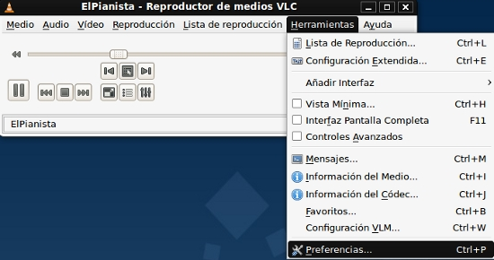
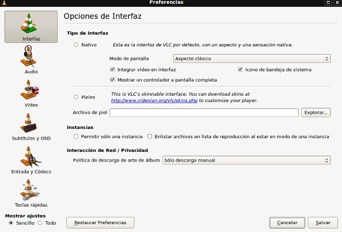
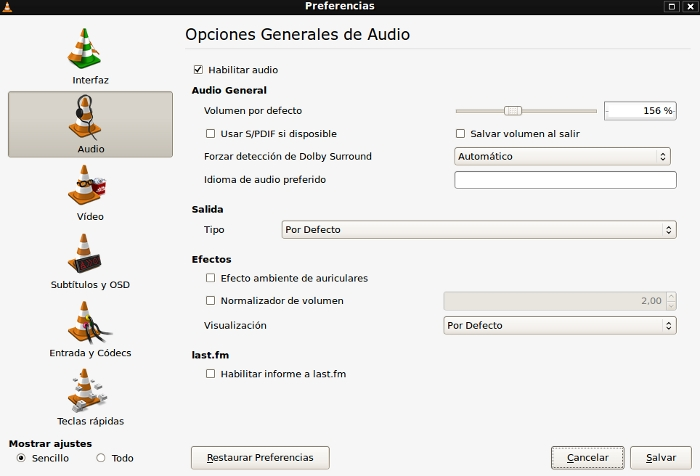
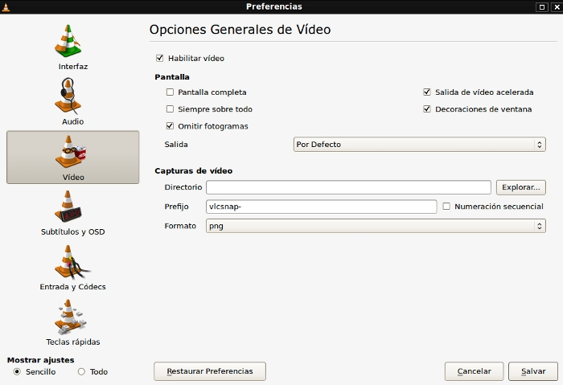
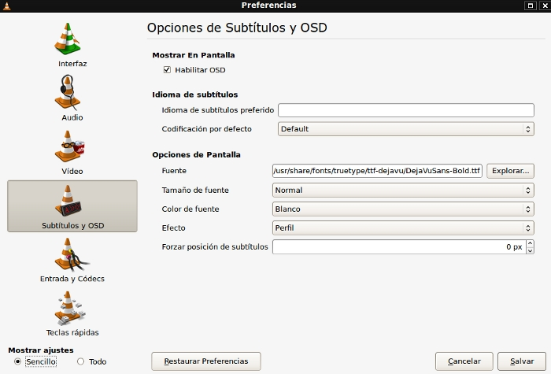
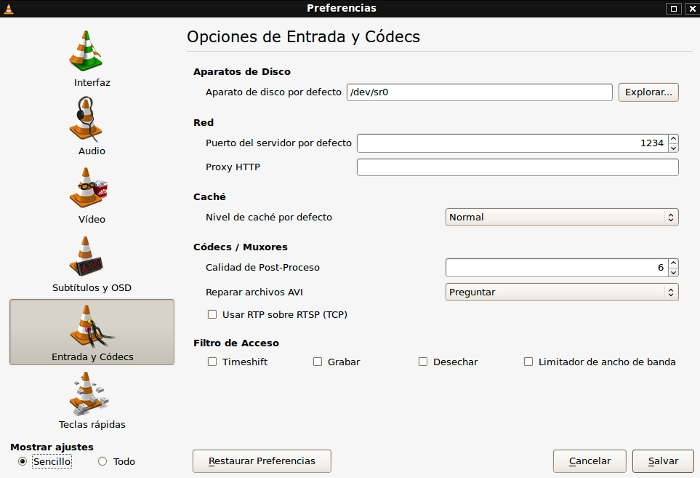
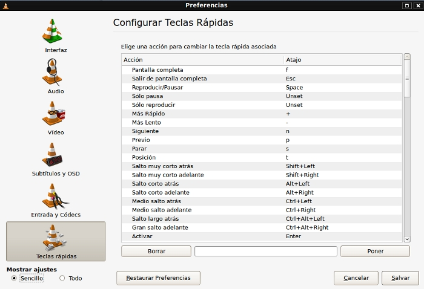

Sabemos de la importancia en los reproductores multimedia de que ciertos aspectos estén configurados de forma correcta, para que la reproducción de tus películas o canciones se realice de la forma más óptima posible.
Para modificar estos aspectos de configuración, tienes que hacer clic en la barra de menús en Herramientas→Preferencias.

Las opciones que encuentras en la ventana que se abre son :
Interfaz: permite modificar aspectos como el aspecto de la pantalla, integrar vídeo en la interfaz, mostrar un controlador a pantalla completa, instancias, privacidad, etc…

Audio: puedes habilitar o deshabilitar el audio, establecer el volumen predeterminado, detectar el sonido Dolby Surround, escoger el tipo de salida de audio, los efectos de sonido, etc…

Vídeo: podrás habilitar o deshabilitar la opción de vídeo, ver la imagen a pantalla completa, establecer que la ventana de reproducción siempre se coloque por encima del resto de ventanas, omitir fotogramas, realizar capturas de vídeo, etc…

Subtítulos y OSD: te permite habilitar la OSD, elegir el idioma de los subtítulos, la codificación por defecto, el tipo de letra, el tamaño, el color, el efecto, etc…
OSD (On-Screen Display) son elementos que se utilizan para mostrar los menús de configuración en los dispositivos de grabación o reproducción de vídeo, por ejemplo, para seleccionar el canal, información sobre el volumen, el número de canal actual, ajustar el color, brillo, contraste, configurar el día y la hora, etc...

Entrada y códecs: para elegir el aparato de disco por defecto, seleccionar puerto y proxy, el nivel de caché por defecto, los códecs, el filtro de acceso, etc…

Teclas rápidas: en otro apartado de este manual te comentábamos las ventajas de los llamados Atajos, que te permiten realizar acciones en tu ordenador con sólo pulsar una o varias teclas. Pues este apartado de las preferencias de VLC hace referencia a los Atajos que se utilizan en el entorno de nuestro reproductor.

Entre las teclas que más vas a utilizar destacamos:
-Pantalla completa: f
-Salir de pantalla completa: Esc
-Reproducir/pausar: Barra espaciadora.
-Reproducir a velocidad rápida: +
-Reproducir a velocidad más lenta: -
-Siguiente: n
-Anterior: p
-Parar la reproducción: s
-Activar: Intro
-Salir: Ctrl+q
-Subir volumen: Ctrl+Up
-Bajar volumen: Ctrl+Down
-Mute: m
-Zoom: z
-Alejar zoom: Shift+z
Etc…
Anterior: Entorno de trabajo de VLC
Siguiente: Listas de reproducción de películas
{kind=link}
{kind=link}
{kind=link}
{kind=link}
{kind=link}
{kind=link}
{kind=link}